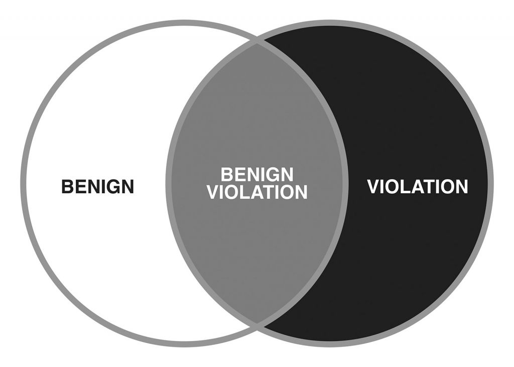
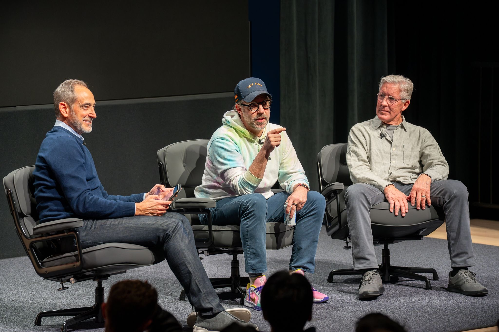
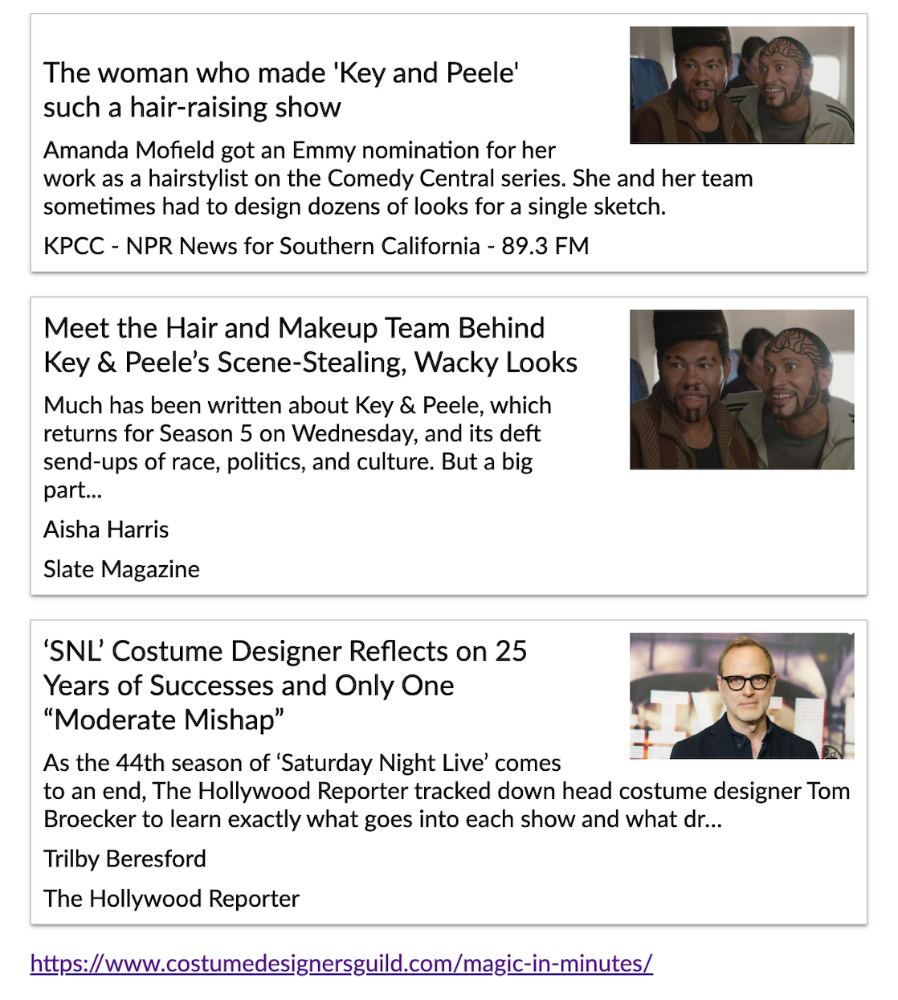
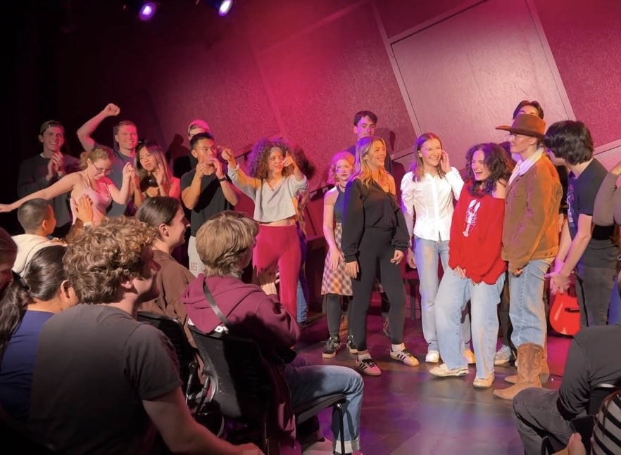

Sketch Comedy at USC: Reflections & My Biggest Takeaways
In today's post, I'd like to organize my notes and biggest takeaways from a class I took at USC in Fall 2025, called THTR-470: Sketch Comedy for Theatre.
But first, I'd like to give a quick intro on what led me to take the course in the first place since honestly, I didn't even know what sketch comedy was until this year (or whether it was worth taking)!
In Spring 2025, I took THTR-482: Standup Comedy 2 (Becoming a Pro) at USC. I'd exhausted the Standup curriculum and thought that I was done taking official comedy classes at 'SC.
Plus, with Standup 2 - with a high-level overview of most of the principles I learned having been outlined in my first blog post about comedy - I think that had developed a good comedic foundation and a system/process to improve which I could implement and become a good comedian with going forward, with or without more formal instruction.
In standup 2, I also had great classmates and we as a group had such a fun dynamic; I imagined that the dynamic would be hard to replicate and that, as a result, standup 2 was going to be the last time I ever took comedy at USC.
But long story short, near the end of the class, a couple of the other students - Nick and Addy (both non-acting majors) - mentioned offhand that they were likely going to take another comedy class as an elective next semester, and it turned out to be THTR-470: Sketch Comedy.
So it was through this word-of-mouth that I heard about the class and ultimately enrolled in it for the Fall Semester.
*Disclaimer*
Many of the sketches - as comedy in general often does - touch on relatively taboo or polarizing topics and issues. I'd like to make it clear that with the examples shown here, I'm not taking sides on any issue - I'm simply analyzing them from a professional comedic perspective, with the goal being to help whomever is reading this learn the ropes of comedy so they can apply it to any topic.
All of the examples here are also all examples we went over in THTR-470 - a formal sketch comedy class at USC - so these aren't random sketches but are rather ones that would be taught in a full sketch comedy course or workshop.
The First Day of Class
On the first day of class, in late August 2025, I walked in slightly late, as would become customary for me on occasion since I had such a packed schedule with both my Astronautical Engineering PhD work and since I was also a Teaching Assistant (TA) for a class called ASTE-520: Spacecraft Systems Engineering (which paid for my comedy and other classes' tuition), and since I also took another technical elective course called CSCI-567: Intro to Neural Networks, in the same semester.
I also had a number of other extracurricular commitments outside of class which kept me even more busy throughout the semester, but Sketch Comedy and becoming better comedically in general was a priority for me so I always made sure to carve out the time for sketch comedy every week.
Class was from 12-2pm on Mondays and Wednesdays every week, in the middle of the day.
When I walked in, everyone was arranged in a circle, and I saw some familar faces from my standup class in the spring, and a lot of new people as well.
As I'd later find out, the class was approximately half SDA (USC School of Dramatic Arts) Majors and roughly half non-majors like me. However, unlike me, I quickly found out that virtually everyone else in the class was a comedic genius, whether they were an acting major or not, and it defintiely challenged me in a lot of ways throughout the semester but led to a lot of really good comedy throughout as well.
USC is the number one, or at least close to the number one, acting school in the world, so the people that were acting majors were the best of the best and it showed throughout the semester.
As I talked about in my first blog post about comedy, and will talk about in a subsequent section here, one of the best ways to get better at comedy is to simply surround yourself with a lot of other very funny people - ideally who are also much smarter than you.
For me, being 25 years old for the majority of the semester, this was not only a rare opportunity to be in a sketch comedy class with super talented people, but it was also an opportunity to do so people who are also in the same ~18-25 age range as well.
Waiting until I was older to get started would've still been possible, but in my mind, the conditions (both being around super talented people and around people my age) likely wouldn't have been nearly as good and it would've been hard to replicate the same dynamic.
In my mind, this opportunity was perishble so I definitely wanted to take full advantage now instead of waiting until I was older (and busier etc. than I already was).
The longer I waited, the larger the opportunity costs of reaping the rewards of being good at sketch comedy and just from being funnier and more sociable in general, so I dove right in despite being overwhelmed with all of my other PhD and life pressures and responsibilities.
In the first class, we likely started off with introductions, possibly some theater games (which are common in SDA/THTR classes) after, and then we dove right into writing with some prompts that the professor gave us to get right into the groove of writing.
Throughout the class, the professor emphasized the importance of quantity, exercising our writing "muscle," and just getting ideas on a page, consistently day after day, week after week. She made this apparent on day one.
We came up with and shared our responses to the prompts in class, but then we were told to brainstorm more responses outside of class as an assignment and to bring those to the next lecture on Wednesday.
Other than writing more responses to those assigned prompts, our other assignment was to read Chapter 1 of the book "The History of Sketch Comedy" by Keegan Michael Key.
Without getting too much in the weeds, I'll start off with the biggest takeaways from that chapter.
A Brief History of Sketch Comedy
The book started off by noting that sketch comedy has existed in its current form - give or take - for approximately 100 years.
But the chapter gives some historical context and background, tying comedy back to ancient civilizations (the ancient greeks, romans, sumerians). It also makes the argument that it ties into ancient and primal aspects of human nature and our cognition, and that sketch (and humor in general) is just a manifestation of that in a sense.
It also highlighted how the comedy of the aforementioned ancient civilizations often centered around many of the common topics we talk and joke about today, further showing how it's just a hard-wired part of our nature.
Moving forward to the more tactical content of the chapter, Keegan Michael Key starts off with the definition of a sketch, which is a good place to start:
What is a Sketch?
According to Key & Peele:
"A sketch is a short scene with characters, a premise, and some form of comedic escalation or heightening."
And throughout the first chapter of their book, they go into further detail on what that means and how sketches work at a basic level.
One of the most important concepts they highlighted after they gave the above definition was the idea of the "you can't do that" moment.
Key & Peele argue that the "you can't do that" moment - which is when a sketch becomes funny because someone violates what feels socially or logically acceptable - is the main engine that drives most sketch comedy.
They also emphasized that the laughter comes from the sketch (sometimes) being reletable to you, seeing human mistakes, and watching someone (a character in the sketch) commit to doing something absurd throughout the course of the sketch.
Benign Violation Theory
While Chapter 1 of Keegan Michael Key's book doesn't explicitly touch on the "benign violation theory" of laughter, the above summary certainly touches upon the same concepts, and I'll give a brief overview of the benign violation theory here.
To help visulize the concept, the Venn-Diagram for the benign violation theory is as follows:
Essentially, the Benigh Violation Theory is a theory of humor that posits that something is funny if and only if three conditions are met:
- the situation is a violation of norms
- the situation is simultaneously perceived as "benign"
- both of the above occur at the same time
In the class, the professor gave a more detailed definition that a benign violation is essentially a violation of something - whether it's a violation of a societal rule or something you're not supposed to do - but that it has to be a violation of a small and manageable one to the point where the audience can see how the actors made that jump, and how it relates to the audience and society today.
For example, the character can't just do something that feels complely random or insane - the audience has to understand why a character made that violation.
Whatever violation the character(s) commit has to make sense based on the base reality the characters are in, in addition to their specific motivations or point of view.
Even if benign violation theory doesn't make sense yet, I'll go through several good sketch examples later in this post and analyze them using this framework and other frameworks that I'll summarize from the class in the sections that follow.
Long story short though, most things, in order to be funny, according to this theory, have to be both benign and a violation.
If something is benign but not a violation, it won't get laughs since there's usually no tension, risk, surprise, etc.
If you try and make a joke about something that is too safe, familiar, or universally agreeable, there’s nothing for the audience to react to.
But on the other hand, if it's not benign but is instead a violation with potential real-world repercussions or is something that's too cruel or hits too close to home, or if it's in the territory where the audience wonders "should I be laughing here?", then it's almost certainly not funny.
Something I should note is that in my Standup 2 class, when we talked about boundaries with respect to comedy, something that was said again and again is that "Comedy = Tragedy + Time," and even in our sketch class here, we talked about how whether something is acceptable to joke about also relates on yours and your audience's emotional distance to the situation as well.
How close you and your audience are to the event in both time and personal impact can have a tremendous effect on whether something's ok to joke about, but you should usually be safe rather than sorry if possible.
Punch Up, Not Down
A good rule of thumb for sketch comedy which was discussed throughout our class was that you should "punch up (or across), but never punch down."
While it's relatively self-explanatory, punching up roughly means that you're "attacking" or making jokes about a group that's already in power or that has authority, e.g. the government or famous creators.
Punching down usually implies that you're making jokes about people who are less fortunate, or don't have agency or power to do anything about those unfortunate circumstances.
Either way, though, it will vary from person to person or creator to creator depending on their perspective and experience.
"Embrace What Makes You a Loser"
After reading and discussing chapter 1 of the Keegan Michael Key book, one of the first videos we watched in class was the following video, which has a key takeaway for writing successful comedic characters:
While it's not relevant, our professor menioned that this was a video of a fan cornering Michael at a conference or some type of event, which explains why Key looks a bit nervous here, but that the response which Michael had to the guy's quesiton was really good and had several key insights.
He emphasizes that on his shows, he often tries to create characters who are trying to get away with something, because comedy and drama has to almost always be about people behaving badly, and that "if you write an uplifting scene, it's not funny."
He emphasizes that it's often people trying to hide something, get away with something, trying to think they're someone that they're not, and so on and so forth. If you can infuse that type of energy in a character (they're a badass when they're not really a badass, or they have more knowledge or wisdom than they actually have), that's usually the cornerstone of great comedic character.
Boiling it down to a simpler and more classic example, Keegan mentions that, as a famous SNL writer put it, "a really good comedic character is often a character that embraces what makes them a loser."
So if you can find a good component about a character or something they would care about that no one else cares about, and that they would "go to the ends of the earth to fight for," that is the basic anatomy of a good character.
What is a sketch? (alternate def'n)
In class, we also came up with an alternate definition of a sketch, which is that "a sketch is a short comedic exploration of a character, concept, or situation."
It's important to note that a characteristic of sketches is that they's short, usually only ~2-4 minutes (sometimes more) in length.
Later on in this blog post, I'll also highlight how virtually almost all of the concepts that make up the building blocks of sketches are also an excellent framework for making good short-form social media skit-style content as well.
For the majority of people reading this, they're either looking for ways to become funner in their everyday lives, or they're more likely looking to get better at social media content, rather than become sketch comedians themselves. Or they also might just watch late-night shows as a hobby and just want to be able to appreciate, analyze, and understand these shows at a much deeper level.
Either way, understanding the principles outlined in this document will help readers accomplish all three of the above objectives.
More Key & Peele Takeaways
Before moving on, there's a few quotes I'd like to highlight from Chapter 1 of the Keegan Michael Key book which I think are helpful.
One of the quotes touches on how laughter is so deeply engrained in all of us, where Keegan says that "even babies laugh before they can even speak... laughter is the way humans of all ages connect and share..."
And also, importantly, that "the core of most humor comes from us relating to each other and the awkwardness of the human experience."
In the following, longer quote, he paints a vivid picture of the degree to which your humor should affect your viewer, and what you should be shooting for when creating your comedy pieces.
"It goes a little something like this... you know when you're watching a sketch and one of the characters does something really outrageous, something above and beyond, that is so ridiculous that it's probably even wrong? I'm talking about one of those moments that is so out of left field, that it should be against the rules... like an ikea moment when somebody might actually get yp out of their seat and talk back to the screen. I've seen people during a comedy show that have to go and leave a room because the joke surprised them so much... that's the stuff I'm talking about..."
"Jordan Peele and I, on our show Key & Peele, were keenly aware of this level of response, and like to see it as a challenge when we wrote our material... how do we get someone who is watching one of our sketches to get up and sat the words our loud: 'No, no,.. this f-----, nope, you can't do that, y'all stupid!'..."
When writing your own sketch comedy or content in related formats such as short-form video content, keep these concepts in mind!
It's a lot to digest, but these concepts are DEFINITELY eye-opening!
What Makes A Good Sketch Character
Characters - along with the right sketch structure - are the bedrock of great sketch comedy.
Sketch Comedy, by definition, is short, so the characters must be both exaggerated and also very focused so that the point can be made in the small amount of time that they have during the sketch.
In fact, all of sketch comedy is an exaggeration of the real world or real issues, but we'll talk about sketch types in more detail in the next section.
Point of View (POV)
First, for each character, you must start off with finding their POV (Point of View). This is generally the easiest way to create a comedic character - and their POV essentially boils down to "what do they care about the most?"
Then, from the duration of the sketch, all of their actions and responses stem from this one primary POV and underlying motivation.
I'll give four quick examples of sketches that we discussed in the class and the POV of the main character from each sketch.
Examples of POV
The first sketch is called "I Think You Should Leave" with Tim Robinson:
The sketch is about a guy wearing a hot-dog costume who crashes a hot-dog shaped car into a storefront, and then becomes increasingly more unhinged while trying to convince everyone that it couldn't have been him (even though it's obvious that it was!)
In the sketch, Tim Robinson's Hot Dog Man character's POV is that all he cares about throughout the sketh is escaping blame.
The second example is called "Good Burger" and it's about a fast food worker whose only motivation is about giving customers a good experience, even to the determent of the restaurant and his own well-being:
Lastly, the third example that we'll go over here, which we went over in class, is an SNL Sketch called "Target Lady."
In the sketch, the target worker's POV is that they care TOO MUCH about doing their job well, to the point that normal customer interactions escalate into abnormal and socially baffling interactions.
Hopefully these quick examples help POV make more sense as you go about developing your own characters for your sketches.
For your main character(s), if you can't answer the quesiton "what do they care (most) about?" (e.g. what is their POV), then the character likely isn't fleshed out enough.
One Overriding Want (Not Many)
When deciding your character's motivations and POV, it's critical that you focus on one overrriding want/POV/motivation.
This is because sketch is very short so you much get to the point very fast.
All Sketches are an exaggeration, and it's much easier when you're focusing on one thing rather than too many.
Almost everything in the sketch should be centered around the one want/POV that you pick.
Just to drive home the point again, everything in a sketch will stem from what the main character(s) care about the most.
Exaggeration, Grounded In Truth
As I've mentioned several times throughout this blog post, all of sketch comedy is an exaggeration, but the catch is that the exaggeration must be based on something that's at least grounded in reality or somewhat true.
For example, with the hot dog sketch above, the "truth" (what's real in the sketch) is that people often panic or are sometimes even in denial, even when they're at fault, and that they often deflect blame and sometime convince others that they couldn't be responsible.
The sketch takes this to the extreme and had the main character vehemently arguing that it wasn't his fault, even though there were dozens of eyewitnesses and they all concur that he clearly was the one who crashed the car into the store.
In the Target Lady sketch, the truth is that in the real world, retail employees are trained to be overly polite and outgoing towards customers, but this sketch exaggerates that to another level to the point where the person become too obsessed with doing those aspects of their job well, which then led to the uncomfortable customer interactions which made the sketch funny.
As a side note, tools like ChatGPT and other AI bots are EXCELLENT at helping you break down these and other aspects of skeches, especially as you're learning. I highly recommend feeding them all of the fundamentals here and the transcript (and any applicable secondary sources) of the sketch you're analyzing, and if you're stuck on figuring out "what is this character's POV?" or "what is the ground truth (which is being exaggereted) here?" or what the sketch type is or so on and so forth, it can be an excellent tool to help you understand and analyze sketches using the frameworks described here once you're first starting out.
Once you get really good at sketch comedy analysis, you'll start doing these things automatically as you start watching sketches even just for fun.
Specificity Is Key
Honestly, this is something that I myself still struggle with, even after having taken the class, but this point - that specificity is KEY - was repeatedly emphasized throughout the entire semester.
The comedy lies in the details, and the more specific you can get, the more believable the character's POV and their exaggerated traits will be.
The core principle here is that "Generic = Boring" and "Specific = Funny." Specificity is the tool which is able to transform okay comedy into GREAT comedy.
Or if it's something that's simply relatable, but still needs a comedic punch, details can turn that thing into something that's actually funny.
Tying it back to the benign violation theory, specificity brings things that were originally too generic out of the "benign/boring" region of the venn diagram.
The better you are at specificity, as I'm alluding to above, the funnier your material will tend to be.
Particularly since sketch comedy is so short and needs to get to the point FAST, the professor repeatedly emphasized to always put more details if we can!
Not only are specifics better for getting laughs, but they're also really good for helping the viewer get up to speed with the sketch, understand the base reality, what it's about, what's going on, the who, what, when, where, why, and how as quickly as possible.
We'll talk about all of those things in the sketch types and sketch structure sections, which are up next.
But before that - to help both myself and anyone reading this who might also be struggling to understand and implement this exact concept successfully - I'll go through a bunch of examples to illustrate.
Some examples I wrote down that we had from class were:
- Going from saying that a character smokes, → to specifying what the character smokes (e.g. "they smoke 42 menthols a day..." or "they smoke 10 packs of camel straights a day...")
- Going from saying "computer" in a sketch, → to saying that the character uses a "chromebook" since that detail will serve the comedy a lot better
- In a dental-related sketch, going from just saying "tooth" → to saying "back molar" adds more comedic specificity
- Going from saying character X went to "a restaurant" → to saying they went to a "Cracker Barrel location in Utah"
- For a "nervous" character in a sketch, going from no physicality → to introducing physicality and expressing that nervousness through their physicality. It made the dialogue and verbal jokes WAY better
- Introducing an accent or vocal inflections specific to the character which bring them much more to life
- Dress and costume which are relevant to the character (even if highly exaggerated)
- Character-POV Specificity/Obsession (mentioned earleir)
- Going from a "doctor messing up during surgery" → to the doctor "dropped the appendix during surgery!"
- Going from a character who's "annoying" → to "annoying and only cares about candy"
- Going from a "restaurant worker" → to "a restaurant worker obsessed with customers' [having a positive customer] experience"
- Going from just being a "nervous character" with nervous dialogue → to introducing physicality like an awkard posture, fidgeting, movement, etc. which really brings the character to life
- Going from being an "annoying kid" character → to "annoying person who sits with a specific posture" etc.
- Introducing specificity for a character through a catch-phrase that they repeatedly go back to
- Giving your character the name "Target Lady" or "Pool Boy" so that the audience understands them and their role, POV, base reality, etc. more quickly and efficiently
- For a sketch about college life, going from having the location be a generic "apartment" → to being a dorm room (which introduces a different set of dynamics)
- Going from saying "my cousin" → to "my southern cousin"
- An overdressed investment banker character mentioning that he wears only "Louis Vuitton Suits" and that it's "$20,000 per piece." (costumes help A LOT as we'll discuss in a later section)
- Going from saying "cookies" → to saying "double-stuffed oreos" instead
- Going from saying "car" → to "Ford Explorer" → to later saying "with sirens..." → then, later, handcuffs/warrant
- Going from saying job interview "at a movie theater" → to job interview "at a cinemark movie theater bar"
- Saying "Purdue University..." "The global one!"
- "Forty nine cigarettes a day"
- Smoking → "Smoking inside a Doctors office..."
- Going from "the summer I turned pretty" (TV show) → "the summer I turned slutty"
- Going from saying "starbucks" → to "Pasadena Starbucks"
- Starbucks Baristas saying that they "have three PhDs..."
- Specifying what said PhDs are in → "Astrophysics, Pyrotechnica, and small animal care..."
- From saying "Utah" → to saying "West Valley County, Utah"
- Going from saying "drug dealing" → to saying "schedule 1 narcotics trafficking"
- Going from saying "dog" → to saying "Belgian Malinois"
This was a relatively short list of some examples that we had in our class that I wrote down or which were in the final scripts, and there were so many more good ones which I didn't write down, but all in all, specificity can range from just adding a little bit more detail to punch the script up all the way to making it 10x funnier with specifics, depending on how creative you're able to get with it.
As you can also see from the list, there's a lot more than just dialogue that goes into characters, such as dressing up, costumes, body language, vocal inflections, and so many other aspects and specific details which you can add and exaggerate - but we'll have an entire section on this later since each of these things can have a huge effect on the effectiveness of your sketches.
If you had to compress this section into one sentence, it would be that "A Relatable Situation + a ton of ULTRA-Specific Details (from a variety of vectors/angles) = Pretty Good Sketch Comedy."
Sketch Types
Most sketches aren't just ad-hoc or "random" - in fact, most follow and fall into tried and true sketch "types" and I'll discuss some of the most common ones and some examples of each below.
Exaggeration Sketches
As I've mentioned multiple times, most sketches fall into this category, even if they're primarily another sketch type, since most sketch comedy is an exaggeration of reality or the concept you're talking about, to some degree.
It should be noted that sketches don't have to fall exclusively into one "type" and that they can be a blend of multiple types. When a sketch falls under multiple types, there are some common combinations, as we'll see in our analysis section later.
In exaggeration sketches, you take a real world situation or behavior and push it far past norms, relentlessly escalating it to a point where it's acceptable. Characters in the sketches here still believe that they are acting reasonable even when the behavior becomes extreme.
In short, in exaggeration sketches, you take a recognizable situation and distore it via exaggeration.
Examples we'll go over for this sketch type include:
"Mr. Westerberg" from SNL (2015), which is a situation where people are complaining about their boss, which is then distorted via exaggeration:
Another example of an exaggeration sketch which we highlighted in class is "OK by Key & Peele" (Comedy Central), which is a character-based exaggeration sketch, with the sketch being centered around the thoughts that someone might go through when they see *potential* signs of infidelity.
The next example, called "Simu & Bowen - SNL," and also discussed in class, is another exaggeration sketch which exaggerates society's obsession with "firsts" and takes it even further and to places that don't make sense.
In class, we also discussed "Topper Sketches," which are a sub-category of exaggeration sketches where characters are trying to out-do each other. Simu & Bowen is also an example of a Topper Sketch.
Inappropriate Response Sketches
To create an Inappropriate Response sketch, you take a normal or recognizable situation, think of what the logical response would be (or have a logical response that would be clear to the viewer), then have your character do the opposite OR something else that's illogical.
More often then not - as we'll see in the following examples with Pete Davidson - it's an underwhelming reaction to the situation, but sometimes you could go in the opposite direction and have it be an over reaction as well.
The first example of this sketch type that we saw in class was "Pool Boy" (SNL) with Pete Davidson:
The next example is also a Pete Davidson sketch called "Chad on Mars" (SNL), featuring Elon Musk, where Pete's character has extremely underwhelming reactions to the life and death situation he's going through and the otherwise serious news he receives throughout.
Another example - not discussed in class - which I'd like to highlight, is called "Space Station Broadcast," an SNL skit with Steve Carrell where Carell, the "commander" of the international space station, is broadcasting live and continues to do so nonchalantly, even as a series of increasingly catastrophic disasters happen live on air.
All three of the above sketches are examples of the "underwhelming reaction" subtype of inappropriate response sketches. The following sketches shown shown below are all "over-reaction" versions of inappropriate response sketches.
The first over-reaction subtype sketch is called "The White Rug | Portlandia:"
In the sketch, one of the characters accidentally spills a drink which stains a white rug, which is understandably a stressful situation.
But the two homeowners completely overreact to the situation, treating it like a catastrophe, escalating it far beyond any reasonable reaction, which makes it funny.
"The Telemarketer" by Key & Peele was the next in-class example:
Key's character in this sketch completely over-reacts to being hung up on by the telemarketer once the telemarketer realizes that he doesn't want to buy and it escalates absurdly from there.
The final over-reaction sketch that we highlighted in class was a sketch by a Canadian sketch comedy group called "I don't drink:"
In this sketch, three of the friends order a drink and the fourth says that they don't drink, and the socially normal or acceptable response would be that "that's fine" or "Cool! No worries," but instead, the three drinkers have the opposite reaction and completely over-react to the fourth friend not wanting to drink.
Fish Out of Water Sketches
Fish Out of Water Sketches consist of a scenario where a character is placed in the "opposite" world or surroundings that they're used to.
Typically, the humor comes from misunderstandings or mistakes that arise as a result of this juxtaposition.
It's when a comic character with a unique or "weird" POV is dropped in a normal world, where the normal world is "weirded out" by the character.
The opposite of a fish out of water sketch - where a normal character (voice of reason) is dropped in a comical/crazy world, surrounded by comic characters, is called a "Center & Eccentrics" Sketch Type. These are less common, but there's still a couple examples I'll highlight here which we went over in class.
Something that's important to note is that it's easy to confuse inappropriate response and fish out of water sketches, although while you can sometimes combine the two, there's usually some clear differences once you're able to spot them.
In inappropriate response for example, most of the time we have a recognizable situation - e.g. the space station broadcast with astronauts in it - where the primary twist is in how one or more of those characters don't react how they are supposed to. Their behavior is the primary thing that's off in these scenarios, not the fact that they don't belong in that world.
Fish out of water sketches, on the other hand, are a totally different type. Instead of having characters be in their own normal worlds or situations, we either have a comic character (who doesn't belong) in a normal world (for Center & Eccentrics), where the world is weirded out; or a normal person in a comic/crazy world (or the opposite of where they should be), and the normal person is the one that's "weirded out."
Before diving into examples to illustrate these concepts, one last sketch type which isn't primarily a fish out of water subtype but it often combined with fish out of water sketches are "two peas in a pod" sketches.
In this case, you would have two comedic characters in a normal world (for a fish out of water sketch, or the opposite for a C&E sketch), and this is very common and works well because the two comedic characters can bounce off of each other as they contrast with the voice of reason.
Let's dive into some examples - remember that fish out of water sketches essentially are character-based, where you come up with character ideas, then pair that character with the opposite world.
The first fish out of water example we went over in class is The Kroll Show's "Oh, Hello" on Comedy Central:
This is an example of both a two peas in a pod and a fish out of water sketch. Here, the two comedic characters are dropped in a world both where they play against real-world athletes in a pickup basketball game and talk to a normal doctor in a real-world medical setting.
In both cases, the settings are normal (pickup basketball, medical appointment, etc.) but the two comedic characters "weird out" the characters who are normally in those worlds.
In class, one of my favorite sketches we watched and analyzed was "Pizza Business (SNL)" Starring Jason Sudekis.
In the sketch, the pizza lady is a fish out of water asking for money for her absurd pizza business idea while the banker, Jason Sudekis, and the setting (being in a bank) are normal real-world settings. This is a classic fish out of water sketch.
On a personal note, Jason came to co-teach one of my classes at USC for a lecture - "The Game is Life" taught by legendary NFL and College Football Head Coach Pete Carroll - so it's always fun watching his comedy since I have that personal connection and since he also dropped a lot of gold nuggets in that class regarding how to get better at comedy in general and his own journey as a "young 23 year old (expletive)" who was lost before he ultimately found success later, which was also very relatable.

The first picture shows our two professors, Dave Belasco (of USC) and Pete Carroll, along with our guest speaker, Sudekis. The second shows us as a class watching selected Ted Lasso clips together. In the last picture I'm in the LA Rams hoodie watching intently along with the rest of our class!
I'll write a more in-depth blog post or series of posts about my experience in that class at a later date, but the personal connection was cool, and for now, let's get back to more fish out of water examples!
The next example, "I Think You Should Leave | Hot Dog Car Sketch" by Netflix is a Joke (starring Tim Robinson), is actually one that we already used as an example in the POV section.
This sketch is another classic Fish Out Of Water sketch since he's a comedic, non-serious, character in a normal world treating a very serious situation in a non-serious, joking way.
One more thing which I'd like to note about this sketch which applies to all sketches is that they REALLY layer in the comedy in this one in order to keep the viewer hooked.
For example, in the second half of the scene, not only does Tim's character have his funny dialogue, but he's both simultaneously layering in more layers of comedy on top of that through both his costume and his action (stealing clothes as he's making his jokes as a "distraction"). We'll talk about "layering" comedy in a dedicated section after sketch structure.
The next two examples - "SoulCycle (SNL)" and "Barbie Instagram (SNL)" are both examples of Center & Eccentrics (C&E) sketches, where normal characters are dropped in a crazy world:
In SoulCycle, the two normal characters take a class led by a bunch of eccentric people who are auditioning to be Soul Cycle instructors, which makes for an awkward but fun and comedic dynamic.
In Barbie Instagram, the Mattel executives are the normal characters, and the interns are the eccentrics, with one of the interns in particular (Donald Glover's character) stealing the show.
One of the top YouTube comments captures the three eccentric characters perfectly: "Dumb, dumber and extremely dark, the three pillars of comedy."
And not to go on a random personal side-tangent again, but I attended the Barbie World Premiere in Los Angeles in 2023, and it was a great movie and fun seeing the actors in real life, so I have that personal connection to this sketch, which was actually written a few years before the movie came out.
Inversion Sketches
Inversion sketches are characters or situations behaving or occuring in the opposite way that we'd expect.
This is a very easy and accessible form of comedy. You can take virtually any character or situation and apply this sketch type do it.
In order to implement this sketch type, simply subvert expectations and do the opposite of what we'd expect.
Usually Inversion sketches are more character driven. Inversion sketches aren't always about their emotional responses as much as it is about them simply behaving the opposite of what you'd expect.
The first Inversion sketch example we went over in class is called "Gang Orientation:"
In this case, while the situation is a "gang orientation," the situation (and behavior of the characters) reads much more like a corporate orientation than what you would potentially expect with a gang, which inverts expectations and makes it funny.
One of the other inversion sketches that we watched and analyzed in class was "Sick Child" by Comedy Central:
The sketch is an inversion because in the sketch, the sick child's dying wish is NOT to meet a particular celebrity and the game of the sketch is essentially the parents and kid saying all the reasons why they don't want to meet said celebrity, which makes for an aburd but comedic sketch on a usually very serious situation.
The next inversion example from class, called "Girl at a Bar (SNL)" is a bit more straightforward:
In this sketch, the woman waits at the bar - while waiting for her other female friend to arrive - and is initially apprehensive about bad (i.e. sleazy) men approaching her.
Instead, over and over throughout the sketch, she's approached by men who are very politically progressive (or at least pretend to be so) but who ultimately end up being just a bad as the sleazy men.
Next up is "The Librarian" from Saturday Night Live featuring Margot Robbie as the librarian character.
The sketch has two clear inversions - where the behavior of the librarian character inverts and clearly goes against expectations.
I've sort of seen this "double/layered inversion" pattern come up with the last two sketches, actually.
The last Inversion Sketch example that I'll highlight from the class is called "A sociopath goes for a job interview" from the british Tracey Ullman Show:
In this sketch, a "sociopath" with a very dangerous criminal record is being interviewed for a role at a bank, and after initial pleasantries, the interviewers dive into her criminal history throughout the rest of the sketch.
The tension understandably becomes high for the viewer after that, especially as they dive deeper into the details and specifics, but as the sketch goes on, it becomes apparent that the interviewers are inverted characters as well (not just the interviewee) since they keep asking questions even though it was apparent they should've stopped the interview early or never done it in the first place.
They also end up offering the person the job at the end too, despite them "being on the run" for "crimes against humanity" which completes the inversion.
Clash of Context Sketches
Clash of Context sketch structure is essentially a sketch type that generates the humor by combining two worlds or situations that don't belong together at all, with the humor coming from the juxtaposition of those incongruous elements which do not logically belong together.
The first clash of context example is the SNL classic "Star Wars Undercover Boss (w/Kylo Ren):"
In this sketch, the worlds of Star Wars (specifically with a sith lord) and Undercover Boss are fundamentally incompatible with each other (like, usually sith lords in star wars don't have empathy!), but combining them opens up a lot of opportunity for humor, and it was one of the greatest SNL sketches of all time as a result.
The next clash of context example is another classic SNL sketch called "Mafia Meeting" starring Pete Davidson and Gwen Stefani:
In this sketch, the clash of context is extremely clear - a high-stakes mafia meeting is taking place but is then interrupted by a singer's performance in the same venue.
That juxtaposition (life and death meeting with mobsters, being interrupted by a care-free music performance) makes for some really good comedy in this case.
The final clash of context example that I'll highlight from the class is SNL's "HBO Mario Cart Trailer" starring Pedro Pascal:
Here, the world of "The Last of Us" (which I haven't seen) - a post-apocalyptic, serious movie - and Mario Cart (a less serious, fun game) are combined, and imposing the serious tone on Mario (and related characters) makes an otherwise serious movie trailer very funny.
As of this writing, I don't have a full understanding of clash of context sketches quite yet, especially since we didn't go super in depth on these in class, but in future articles (or revisions of this one), I'll dive deeper and make the distinction between this sketch type and other types clearer.
All-in-all though, clash of context sketches are sketches where opposite or worlds that don't belong together are combined.
Parody Sketches
Parody sketchest are one of the most common types of sketches and they essentially create comic effect through imitation of some type of familiar or well known source material, situation, or person.
Satire Sketches - which we'll touch upon in the next section - are a sub-type of parody sketches, but the main differentiator is that Parody sketches are just for comic effect and don't necessarily need to highlight societal issues like Satire sketches do.
Satire Sketches shine a light on society's ills or societal issues whereas
In parody sketches, you're either making fun of something because of distaste (e.g. because you don't like it) or because you're making a playful tribute towards it (because you do like it).
The first in-class parody example which I'll highlight is one that I also had as an example for clash-of-context, the Kylo Ren Star Wars Undercover Boss sketch:
In this case, it's parody, not satire since it's simply playfully making fun of the star wars universe and undercover boss TV show and doesn't dive into any heavy societal issues or themes at all.
This Star Wars Undercover Boss sketch is also a type of Parody called an "Anachronism Parody," which is a type of parody that creates humor and satire by usually deliberately placing something from one era into an incompatible historical setting. This usually involves creating ridiculous (but funny) situations through juxtaposition such as:
- A caveman using a smartphone
- A roman emporer dealing with modern office politics
The Mario Cart trailer sketch which we highlighted in the clash of context sketches section also doubles as an anachronism parody.
The next Parody example is "Enhancement Drug" (SNL) featuring Dwayne "The Rock" Johnson:
This sketch is a playful parody on enhancement drugs, touching on and exaggerating themes commonly associated with these drugs, but heightening them even further for comedic effect.
The third satire sketch I'll highlight from class here is a parody of the bachelorette:
This one also isn't satire since it's simply playfully making comedy out of the bachelor show format rather than highlighting one of society's major ills.
The next parody example from class is an SNL sketch called "The Black Lotus:"
And the final Parody Sketch which I'll highlight from class is caled "Swiftamine" from SNL:
Swiftamine imitates and combines the familiar format of a pharmeceautical commercial with a well-known celebrity (Taylor Swift) and uses those to parody, in a fun way, how widespread Taylor Swift fandom has become.
All of the remaining sketch examples will specifically be Satire Sketches:
The first Satire Sketch example is "Colorado" by Amy Schumer (on Paramount+):
The sketch uses a parody of a Colorado tourism ad as the vehicle to touch on the much deeper societal issue of reproductive rights and abortion, thus making it a satire sketch since it touches on one of society's ills.
The next satire example from class is "Alien Invasion" by Key & Peele:
The sketch uses the alien invation parody as the framework/vehicle to explore the deeper societal issues of certain stereotypes, which makes the sketch satire.
The last in-class satire example that I'll highlight is Comedy Central's "ICE Responds to All That Negative Press:""
This sketch, a Parody (and critique) of ICE's policies, is satire since it talks about deep, real-world issues with the U.S.'s immigration system.
Now that we've gone through all of the major sketch types and examples highlighted from class, I'll go over the structure which applies to all sketches regardless of sketch type.
Sketch Structure
In our sketch comedy class at USC, we also analyzed and constructed all sketches with the same sketch structure.
Summarized succinctly, the elements of a sketch are the:
- Base Reality
- First Unusual Thing
- What is the Game (& each beat)
- Blow Beat
- Button
Occasionally, sketches won't truly fit in the set structure outlined above, but for the most part, I'd reasonably estimate that ~90-95%+ of mainstream successful sketches follow this structure.
First, we'll start off with discussing the foundation of all sketches - the base reality.
Base Reality
The Base Reality should be obvious and crystal clear to the audience as soon as possible.
By itself, it isn't explicitly meant to be funny, but rather needs to establish the who, what, where, when, and why of the situation.
This should be introduced and given enough time to settle before you dive into the jokes and comedic material, otherwise the audience could get confused.
First Unusual Thing
The first unusual thing is the initial element that breaks the established base reality of the scene.
The base reality itself may be a bit absurd and get some laughs, but the first unusual thing is the first abnormal thing within that reality which starts "the game" and the sequence of laughs that follow.
In other words, the first unusual thing is when a character introduces an unexpected or abnormal element that contrasts with the everyday situation introduced in the base reality.
As I mentioned in the base reality section above, usually the base reality has some time to breathe before the first unusual thing occurs - i.e. you don't just jump into the first unusual thing or try and get jokes right off the bat.
While there's always exceptions, if you try to introduce it too soon, you'll likely leave your audience confused.
The Game (& "The Beats")
In sketch comedy and improv, "the game" is the single, central, unusual pattern of behavior or core comedic bit that the entire scene is built on and continues to heighten to absurdity throughout.
In sketch, in order to have the biggest possible comedic impact on your audience and also not confuse them, you should only have one "game" that continues to be played throughout the sketch.
This is particularly important in sketch comedy (and other related forms like short-form social media) since, by definition, it is short (~2-4 mins on average, give or take) - unlike longer-form comedy like sitcoms which are longer at ~21-22 minutes on average and have space for multiple games at once (e.g. A/B/C plots, and subplots) or at least within the same episode.
Each beat is typically an escalation of the same joke format that was established by the first unusual thing.
Blow Beat
Concisely put, the blow beat is the final beat or joke where the game is taken to its furthest, often most absurd/exaggerated level, after which the sketch quickly ends.
The Button
The Button is the final punchy line, action, joke, or visual which provides a strong conclusive ending or comedic twist for the scene.
Sometimes it makes a callback to an earlier part of the scene, heightens the absurdity of the blow beat, or the game flipped on its head - in an unexpected reversal - at the end.
The Button is always the last line or action of the scene.
Two Quick Examples
Rather than trying to learn abstract definitions, the best way to understand and internalize these concepts is through good examples.
We'll start with two examples, with the first one being a Comedy Central Key & Peele sketch called "Hall of Mirrors" that we broke down in class:
First, we noticed that the sketch type is a blend of both parody and exaggeration sketch types.
It's a parody of a common, tense, situation in detective and crime TV shows where a criminal is always 1-2 steps ahead of the cop, and the subsequent standoff that ensues.
Furthermore, the reactions are exaggerated for further comedic effect.
Next, the base reality is as follows:
- Who: Detective and Weirdo Serial Killer
- What are they doing: Standoff
- Where are they: Funhouse / Hall of Mirrors
- When is it: Nighttime
- Why are they there: For the standoff
The first unusual thing (for the base reality which was established) was when Key pointed the gun at Peele's character, along with Peele's reaction (the movement he made) which was hilarious.
After this happens, the game is that Peele's character is trying to convince Key's character that it's not the real him - with the rough format of each beat being Peele's character arguing "it's not the real me, I'm just another reflection in a mirror..." and then Key keeps pointing the gun at him as Peele's character comes up with increasingly absurd reasons why he's a mirror and not the real Peele.
The Blow Beat is when Key shoots Peele's character in the leg, breaking the game and confirming he's not a mirror.
In my class notes, I didn't write down what the button of this sketch was - we likely didn't discuss it in class, but the example below has a very strong button which should make the concept more clear.
The next sketch from class which we'll break down the structure for is one that I've shown a couple of times now - the classic SNL Star Wars Undercover Boss sketch with Kylo Ren:
The overall base reality is obvious: it's undercover boss and the star wars universe combined.
Specifically, the who is Kylo Ren as the undercover boss along with his empire officers and stormtroopers, the where is "Starkiller Base" - some imperial base in the Star Wars universe, the What is Undercover Boss, the When is "a long time ago (in a galaxy far far away..)," and the Why is that they're there filming for undercover boss.
While the situation itself is unusual, the first unusual thing that breaks the rules of the situation established by the base reality is when Undercover Kylo asks the employees when they think of Kylo Ren, gets oevrinvested, and has an extreme reaction to it.
The sketch continues this game of Kylo being such a bad boss that even undercover he's not able to completely help himself and he continues to take actions that "risk" exposing his true identity.
The Blow Beat is Kylo using the force on the stormtrooper in the galley and then throwing him against the soda machine - thus breaking the game and clearly revealing who he was to whom it wasn't obvious already.
The Button - which is a VERY GOOD EXAMPLE - is the dead officer at the very end of the scene after Kylo essentially saying he learned a lot, but in reality, this confirms that he hasn't changed one bit through the experience.
Section Conclusion
This concludes the section on sketch structure. Minus a couple of bonus sections with some additional thoughts at the end, you're now fully equipped to analyze and create sketch comedy.
This is certainly A LOT of material to digest, but as long as you consistently practice everything I've taught here over and over again and use the process for learning comedy that I outlined in my December 20th, 2025 post, you'll be able to analyze and produce good sketch comedy (or just be funnier overall) in no time.
Bonus Section: Costumes, Physicality, Inflection
While the fundamental aspects of sketch comedy which we discussed above are important - character development, POV, sketch type, sketch structure, etc. - one thing which I noticed only from being in class and surrounded by classmates who are world-class at comedy, was that there were A TON of "little things" that, when added to sketches, make a tremendous difference.
Don't get me wrong - the underlying principles taught above are the foundation of good sketches or short-form comedy - but what takes it to the next level is the actors' total embodiment of the characters and scene through things such as physicality, vocal inflections, pauses, timing, pace, costume, props, sound effects, and more.
The positive impact of these details are only something that I noticed in class, with all of them making a tremendous difference once introduced to the sketch.
USC is the best or one of the top 3 acting schools in the country, so all of my classmates who were SDA majors were extremely talented and I picked up on these details over the course of the class.
Introducing vocal inflections, and embodying the character's emotions and physicality made in-person sketches so much more engaging.
Something which might not apply to all but to some sketches is that accents (New York Accent, or a British Accent, etc.) for particular characters made a tremendous difference for certain sketches as well.
Timing and pace were things that the professor constantly gave feedback on for nearly everyone as we practiced our sketches throughout the semester. Sometimes, letting a joke sink in and having that silence can be good, and there was also an overall emphasis on pacing.
Costumes, props, and sound effects also made a tremendous difference in our final sketches in particular.
Most of our sketches were practiced or rehearsed in class with our normal street clothes and usually no props.
But the difference between the versions we performed in class - which were still really good - and those same sketches in the final show was tremendous. In the final show, we had costumes, props, and sound effects, and all of these made the sketches 10x better than they already were.
I'll do deeper dives on all of these "extras" in the future since I'm still a bit of an amateur, but if you want to do your own deep research in this area, here's some additional resources which might help.
In class for a Key & Peele Sketch called "East-West Bowl," the professor mentioned that the "costume designer" for the sketch was nominated for an emmy award. Researching the costume designer, for example, could lead you to more resources that teach you about creating good costumes for comedy, short form, or other similar mediums.
Similarly, you could look up resources for sound effects designers, read books on phsyicality, body language, and emotion/vocal inflections, and more.
At the same time, watching a lot of good sketch and short form examples and simply taking note might be the most efficient way to get betetr at these things rather than going too far down rabbit holes, but I'm just giving some ideas since I'm not a huge expert in any of these yet.
For short-form content specifically, other things which you might want to study from the most successful shorts channels and most successful types of shorts in your niche, are a couple dozen videos or more from a couple of dozen channels, and look at not only how they write, but also: how they light, how they film, how they do their set, how they perform, how many characters they use, how they cut, how they edit, and so on.
This bonus section was a bit all over the place since it's something which I'm still not super adept at yet but know makes a big difference, so I wanted to point these things out so you can do your own research and incorporate them into your own sketches over time to greatly enhance retention, quality, etc.
Here's some additional resources which the professor pointed us to about hair/makeup/costume which might be helpful:
Bonus Section: Final Performance!
This article isn't officially endorsed by USC but is simply my personal blog and recollection of my personal experiences so I thought I'd include our class photo (from right after our final performance) here! We seriously had the best group.
Bonus Section: Full Sketch Analysis Examples
Once you have the proper frameworks in place - I believe that learning from (good) examples - and doing so with a large volume is the best way to truly solidify concepts and do so quickly.
In other words, learning from (good) examples is the best way to learn - as I've repeated multiple times throughout this document.
So without further ado, let's finish this article by analyzing several sketches and fully breaking them down using the frameworks I summarized in this document.
Specifically, I'll be:
- Labelling the sketch type or types and WHY
- Giving a breakdown of the Sketch Structure - including the Base Reality, First Unusual Thing, What is the Game (and each beat), Blow Beat, and Button.
- Why I like the sketch in general and what draws me in as a viewer.
This is a good way to analyze sketches overall as you analyze them on your own time, in addition to analyzing all of the other concepts I've summarized in this document.
The first sketch I'll funny analyze is "Surprise Lady: Thanksgiving" (SNL):
This is a classic example of a straight up exaggeration sketch - where a recognizable situation, character trait, or idea is taken and amplified far beyond the lmits of reality to an absurd, humorous extreme.
The base reality here is that a group of friends and family are together for Thanksgiving Dinner.
The who/what/when/where/why of the sketch are:
- Who: Family/Friends at Thanksgiving Dinner
- What: Planning to surprise the mom with her son unexpectedly returning from the military for Thanksgiving
- Where: Someone's house
- When: Thanksgiving evening, right before dinner
- Why: Paul unexpectedly got special holiday leave and they want to surprise his mom
The first unusual thing is sue's first over the top reaction to hearing the surprise. This starts the game which will continue throughout the sketch which is Sue's complete inability to hold in a surprise being further and further exaggerated throughout.
The Blow Beat is when Sue breaks the window and walks out, which essentially ends the main part of the game.
The Button is Sue running back in and then grabbing Aidy's hand and running back out the window after hearing the news that Pete's character has a boyfriend.
This sketch overall is great since it is so physically funny but is relatable, since we all know someone who can't keep a secret for the life of them, and blowing that character to the extremes will likely guarantee a laugh.
Next up is a sketch called "Bungee" (also from... you guessed it... SNL):
This is a classic example of a parody sketch with an element of fish out of water (center and eccentrics sketch specifically), since the sketch is a parody since it makes fun of some of the crazy varieties of workout classes that have begun to emerge over the past decade.
The base reality for this sketch is the Bounce House Studio, a bungee cord workout class.
The first unusual thing is when Timothee's character introduces himself and he treats the class like a drill seargant, saying how hard it's gonna be.
The game is that the characters besides Michael pretend that the class is hard when it's really not, with everyone in reality simply doing easy bungee cord moves throughout the class. And the characters keep pretending that it's exhausting despite there being objective reasons that it's not hard at all like the "calorie counter" on the wall.
The blow beat is when the characters eat cake and then the calorie counter on the wall hits "-1128" which takes the absurity to a high level.
Overall, the sketch is relatable and hilarious since (the perception at least is that) a lot of the new trendy workout classes that have emerged over the past decade don't seem to always include any form of real exercise, and this sketch is a great, comedic example highlighting that.
Next up is a CLASSIC sketch called "Substitute Teacher" by Key & Peele:
This is a classic inversion sketch, since the substitute teacher (Keegan Michael Key) doesn't act how you'd expect normal substitute teachers to be.
The base reality is that Key's character is substituting for a high school classroom.
The first unusual thing is that Key's character pronounces a student's name from for the first time, saying "J Quellin" instead of Jacqueline and the whole class becomes confused.
The game throughout the entire sketch is Key's character says a name wrong, then freaks out when they correct him. His reaction heightens even further after every single student corrects him and he gets more angry and colorful in his reactions.
The blow beat is right before he sends Aaron "A A ron" to the principle's office when he is corrected by Aaron and then starts flipping things over.
The button is when TimOthy just says "present" and Key's character says "thank you" then the sketch ends. In this case, the button was an unexpected reversal of what the game was prior to this point.
In the future, I'll analyze and break down a few dozen more sketches periodically primarily using the frameworks taught in this class since they're so powerful. This is primarily for me personally to get better at sketch comedy AND get better as a content creator and creatorpreneur, more importantly, so that I can both reap the benefits of being funnier in my everyday life and also make a really good living from it in the not too distant future, hopefully
As I've mentioned repeatedly throughout this article and many of my blog articles, analyzing GOOD examples (with the appropriate frameworks) is the best way to learn - an ultra-efficient learning technique burned into my brain from my USC Rocket Science PhD Days - so I hope that the examples and analysis in this article helped!
Whether you just want to become more of a comedy or sketch. enthusiast, or whether you want to apply these techniques and methods to something like short-form content creation, these frameworks will serve you well and help you understand and craft sketch comedy at a much higher level than before.
Again, I'm no expert on the topic - but that's probably exactly the reason I'm one of the best people to introduce other amateurs to sketch comedy since I recently had to go through all of the same hurdles myself that many other novices would as well.
I also primarily wanted to create this as a reference for myself going forward. I am incredibly thankful for the opporutnity to take Sketch Comedy at USC and I hope this article can help comedy overall have a substantially positive impact on the world.